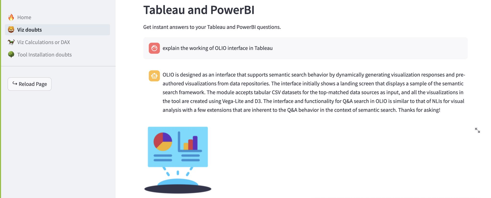
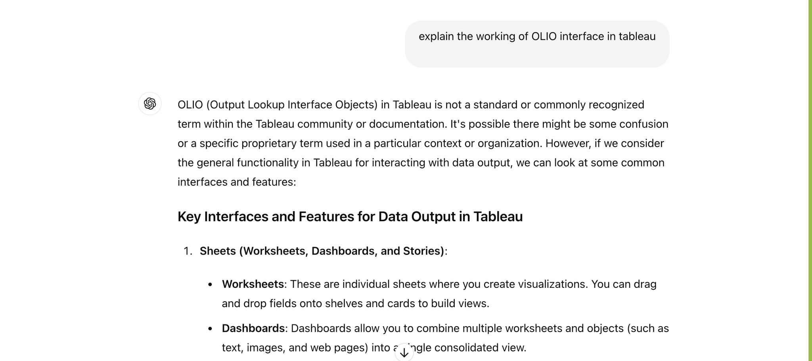

Vizzy GPT
I'm thrilled to share that I've developed a chatbot application designed to assist anyone with data visualization challenges using Power BI and Tableau. Leveraging OpenAI's language models and Retrieval-Augmented Generation (RAG) models, I've built a powerful tool that is well-versed in data visualization techniques. This was made possible by employing the LangChain framework and curating training data from various open-source documents.
This project explores a niche area that hasn't been widely addressed before. Given that the application relies on a paid OpenAI model, I'd be happy to provide a personal demonstration upon request. Please feel free to reach out to me for more details!
I'm also currently seeking opportunities in the field of generative AI. Let's connect and explore potential collaborations!
Here are some snippets related to the application:


So, clearly our Vizzy GPT outperforms ChatGPT.